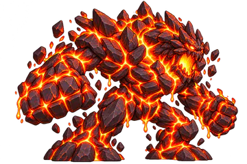
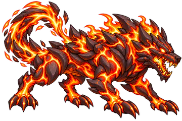
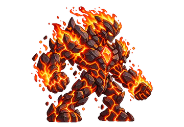
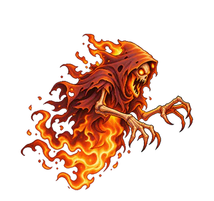

Elemental Knights › Elementos › Fogo
Elemento
Fogo
Pressão ofensiva crescente. Eliminar os inimigos antes que consigam reagir.
Estratégia
Como jogar com o Fogo
O Fogo joga no ataque. Acenda a Queimadura cedo e use as habilidades que ficam mais fortes contra quem já está queimando: Coluna de Fogo vai de 100% para 200%, e o Impacto Incandescente, a Ultimate, de 220% para 260% com acerto garantido.
Energia em Chamas dá +25% de Dano Geral enquanto houver um inimigo com Queimadura, e Brasa Viva soma Ataque a cada Queimadura aplicada. Contra a Água, que vence o Fogo, Sangue Quente anula a vantagem dela nos primeiros 15 segundos.

Contra GeloSuas Habilidades causam +50% de dano.

Contra ÁguaSuas Habilidades causam −50% de dano.
Na Estratégia Elemental você escolhe 2 Passivas e 3 Ativas do Fogo, e a Ultimate ocupa um dos 3 lugares de Ativa. Lutar com o Fogo aumenta a sua Maestria nele.
Efeito especial
Queimadura
Queimadura Intensidade I a V
Dano contínuo que cresce com a Intensidade. Nos níveis altos, também reduz o Ataque do alvo.
Sempre ativas
As 6 Passivas
Funcionam sozinhas durante a batalha. Você leva 2 delas.
-
Coração de Fogo
- +10% de Ataque
- +50% de chance de aplicar Queimadura
- Suas Queimaduras duram 30% a mais
-
Energia em Chamas
- Enquanto houver ao menos 1 inimigo com Queimadura: +25% de Dano Geral
-
Sangue Quente
- Nos primeiros 15 s da batalha, ataques de Água não têm vantagem contra você (causam dano neutro)
-
Brasa Viva
- Sempre que aplicar Queimadura: +2% de Ataque por 8 s
- Acumula até 10 vezes (máx. +20%)
-
Incêndio
- Quando um inimigo morre com Queimadura, ela passa para o inimigo vivo mais próximo
-
Última Brasa
- Com 20% de Vida ou menos: suas Queimaduras causam +15% de dano
Você decide a hora
As 8 Ativas
Entram na Fila de Habilidades e são usadas quando a Barra ATB enche. Você leva 3, incluindo a Ultimate.
-
Impacto Incandescente Ultimate
- Causa 220% do Ataque em 1 inimigo (acerto garantido)
- Se o alvo estiver com Queimadura: 260%
Recarga: 15 s
-
Isqueiro
- Aplica Queimadura em 1 inimigo (garantida)
- Não causa dano
Recarga: 8 s
-
Explosão
- Causa 120% do Ataque em 1 inimigo
- Causa 65% do Ataque nos inimigos ao lado dele
Recarga: 10 s
-
Lança-Chamas
- Causa 80% do Ataque em todos os inimigos
- Aplica Queimadura no alvo principal (garantida)
Recarga: 11 s
-
Recuperação das Cinzas
- Remove até 2 efeitos negativos de você
- +3% de Ataque por 15 s para cada efeito removido
Recarga: 7 s
-
Fúria Ardente
- Por 10 s: +25% de Ataque, +30% de Velocidade e -10% de Defesa
Recarga: 18 s
-
Coluna de Fogo
- Causa 100% do Ataque em 1 inimigo e aplica Queimadura (garantida)
- Se o alvo já estiver com Queimadura: 200%
Recarga: 6 s
-
Erupção
- Causa 120% do Ataque em 1 inimigo (180% se ele estiver com Queimadura)
- Aplica Queimadura nos inimigos ao lado do alvo (garantida)
Recarga: 18 s


Bestiário
Monstros do Fogo
Para enfrentá-los, entre com a Água. Os 11 monstros do Fogo em Entherya, do mais forte ao mais fraco:

Colosso da Caldeira
Tier 7 · Chefe da etapa 2-5

Cão de Magma
Tier 6 · Chefe da etapa 3-3

Elemental de Fogo
Tier 6 · Chefe da etapa 2-3

Espectro Flamejante
Tier 5 · Chefe da etapa 1-1
- Colosso da Caldeira T7 · Chefe 2-5
- Leão Flamejante T7
- Cão de Magma T6 · Chefe 3-3
- Elemental de Fogo T6 · Chefe 2-3
- Espectro Flamejante T5 · Chefe 1-1
- Corvo de Brasa T4
- Salamandra de Brasa T4
- Jaguatirica de Fogo T3
- Bandida Novata T2
- Besouro Incandescente T2
- Cobra Flamejante T1
Perguntas frequentes
Fogo: dúvidas comuns
Qual Elemento vence o Fogo em Elemental Knights?
A Água vence o Fogo: as habilidades da Água causam +50% de dano contra ele. Já as habilidades do Fogo causam −50% contra a Água.
Contra qual Elemento o Fogo é forte?
O Fogo vence o Gelo: suas habilidades causam +50% de dano contra inimigos do Gelo.
O que faz a Queimadura?
A Queimadura é o efeito do Fogo, com Intensidade de I a V. Dano contínuo que cresce com a Intensidade. Nos níveis altos, também reduz o Ataque do alvo.
Qual é a Ultimate do Fogo?
Impacto Incandescente: Causa 220% do Ataque em 1 inimigo (acerto garantido); Se o alvo estiver com Queimadura: 260%; Recarga: 15 s.
Em quais mapas o Fogo fica mais forte?
Ruínas no Deserto, Fábrica Abandonada, Praia Leste: nesses terrenos o Fogo causa +10% de dano e tem +2% de chance de aplicar Queimadura.
Quais Chefes são do Fogo?
No Modo História: Espectro Flamejante (etapa 1-1), Elemental de Fogo (etapa 2-3), Colosso da Caldeira (etapa 2-5), Cão de Magma (etapa 3-3).
Os seis Elementos
Conheça os outros


Escolha o seu Elemento
Elemental Knights é um RPG de estratégia para Android, grátis, em pixel art. As novidades e os convites para testar o jogo saem primeiro no Instagram.